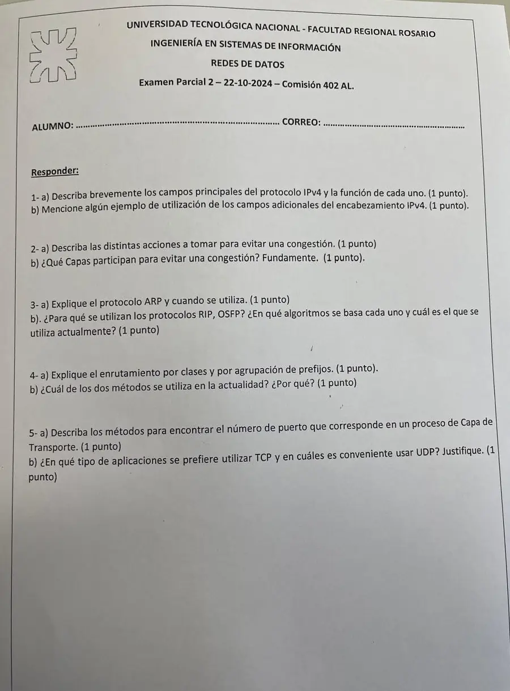

2° parcial, 22/10/2024, comisión 402
2° parcial, 22/10/2024
Enunciado


Propuesta de respuesta
Respuesta no verificada. La propuso Luta Studios con inteligencia artificial y ningún docente la revisó. Puede tener errores.
1a.
| Campo | Tamaño | Función |
|---|---|---|
| Versión | 4 bits | La versión del protocolo |
| IHL | 4 bits | Largo del encabezado, en grupos de 4 bytes |
| Differentiated Services | 1 byte | 6 bits de clase de servicio y 2 de congestión |
| Total Length | 2 bytes | Largo total, hasta 65.535 bytes |
| Identificación | 2 bytes | Número del paquete, para rearmar |
| DF y MF | 1 bit cada uno | Fragmentación |
| Fragment Offset | 13 bits | Posición del fragmento |
| Time to Live | 8 bits | Baja uno por router. En cero se descarta y se avisa |
| Protocol | 8 bits | Qué protocolo de capa 4 va en los datos, TCP o UDP |
| Header Checksum | 16 bits | Errores del encabezado. Se recalcula en cada router |
| Direcciones | 32 bits cada una | Origen y destino |
1b. Los campos adicionales son las opciones, que van después de las direcciones. Ocupan hasta 40 bytes y solo están si IHL es mayor que 5. Por eso el encabezado va de 20 a 60 bytes. El resumen no trae ejemplos de uso de cada opción.
2a. Son cinco etapas, de la más lenta y preventiva a la más rápida y reactiva.
| Etapa | Nombre | Qué hace |
|---|---|---|
| 1 | Network Provisioning | Planificar. Cambiar routers y enlaces antes de que saturen |
| 2 | Traffic-Aware Routing | Repartir por rutas menos cargadas. Multipath evita oscilaciones |
| 3 | Admission Control | No admitir nuevos circuitos virtuales por la zona congestionada |
| 4 | Traffic Throttling | Pedir a las fuentes que bajen el tráfico, con aviso hacia atrás, ECN o hop-by-hop backpressure |
| 5 | Load Shedding | Descartar paquetes, con RED antes de que se llene la memoria |
2b. Participan las capas 3 y 4. La congestión la detecta la capa de red, en los routers, y la causa el tráfico que manda la capa de transporte. Por eso la red avisa (por ejemplo con ECN o con el descarte de paquetes) y transporte baja su tasa, como TCP con AIMD. Más memoria en los routers no lo arregla, y una memoria infinita solo empeora el problema.
3a. ARP sirve para saber la dirección MAC que corresponde a una IP. Se usa cuando un host tiene que mandar un paquete a una IP de su red y necesita la MAC del destino para armar la trama.
- El host manda un broadcast en la LAN preguntando quién tiene esa IP.
- Todos lo reciben, y el host que tiene esa IP contesta con su MAC.
- Con esa MAC se arma la trama.
Si el destino está en otra red, el host pide la MAC del default gateway.
3b. Son protocolos de ruteo dentro de un sistema autónomo. Sirven para que cada router arme su tabla con el mejor camino a cada destino.
- RIP se basa en vector distancia (Bellman-Ford). Cada router intercambia con sus vecinos la distancia a todos los demás. Sufre la cuenta a infinito.
- OSPF se basa en estado de enlaces. Cada router conoce a sus vecinos, mide la métrica, manda esa información a toda la red y calcula el mejor camino.
Hoy se usa OSPF. RIP quedó atrás en redes grandes por la cuenta a infinito y su lenta convergencia.
4a. Hasta 1993 se usaban clases, con un largo de prefijo fijo para cada una.
| Clase | Rango de redes | Máscara por defecto | Hosts por red |
|---|---|---|---|
| A | 1.0.0.0 a 127.0.0.0 | /8 | 16 millones |
| B | 128.0.0.0 a 191.255.0.0 | /16 | 65.534 |
| C | 192.0.0.0 a 223.255.255.0 | /24 | 254 |
| D | Multicast | ||
| E | Uso futuro |
Con CIDR, la agrupación por prefijos, el largo del prefijo es variable y se indica con la máscara o con /n. Varias redes con el mismo comienzo se agrupan en una superred con una sola entrada en la tabla del router (Route Aggregation).
4b. Hoy se usa la agrupación por prefijos, CIDR. Con largos variables no se desperdician direcciones como con las clases fijas, y las superredes achican las tablas de los routers. Los prefijos IPv4 bajaron a unos 200.000 en el mundo, y por eso las direcciones no se agotaron como se preveía.
5a. El apunte da dos métodos.
- Port Mapper. Un servidor en un puerto conocido, el 111, al que el cliente le pregunta en qué puerto atiende el servicio que busca.
- Process Server. Un proceso que escucha en varios puertos a la vez. Cuando llega un pedido, lanza el servidor de ese servicio y le pasa la conexión.
Los servicios conocidos usan puertos reservados, como Telnet 23, SMTP 25, HTTP 80 y FTP 21.
5b.
- TCP, en aplicaciones que no toleran pérdidas ni errores de datos, porque retransmite y entrega todo en orden. Por ejemplo, homebanking y correo electrónico.
- UDP, en aplicaciones de tiempo real, donde no hay tiempo para retransmitir y conviene un encabezado chico. Por ejemplo, un partido de fútbol en directo, una videoconferencia o VoIP.
Son los ejemplos de la guía de capa de red (problema 1).
Respuesta no verificada. Puede tener errores.
Se armó con el resumen del 2° parcial, secciones El encabezado, Control de congestión, Protocolos de control, Vector distancia, Estado de enlaces, OSPF y BGP, Clases y prefijos, Direccionamiento y sockets y TCP y UDP, y el problema 1 de la guía de capa de red.
Quedó en duda: El resumen no trae ejemplos de uso de las opciones de IPv4 (1b); quizás el apunte de IPv4, página 8, los tenga. El resumen solo nombra Port Mapper y Process Server; la descripción de cada uno es una lectura de sus nombres. La hoja dice «enrutamiento» por clases y por prefijos, y se respondió con el direccionamiento, que es lo que define el apunte.
¿Cómo te fue?
Marcá cada tema del examen.
- Campos IPv4IPv4, en 2° parcial
- CongestiónControl de congestión, en 2° parcial
- ARPCómo viene el examen, en 1° parcial
- RIP y OSPFOSPF y BGP, en 2° parcial